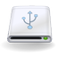
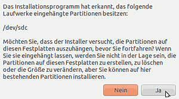
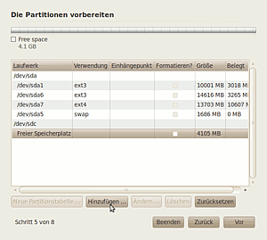
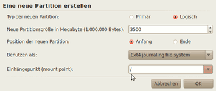
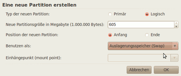

Installation auf externen Speichermedien
Dieser Artikel wurde für die folgenden Ubuntu-Versionen getestet:
Ubuntu 16.04 Xenial Xerus
Ubuntu 14.04 Trusty Tahr
Zum Verständnis dieses Artikels sind folgende Seiten hilfreich:
 Dieser Artikel beschreibt die Installation auf eine externe USB-Festplatte oder einen USB-Stick, im Nachfolgenden USB-Medium genannt. Das Medium sollte leer und mindestens 4 GiB groß sein. 8 GiB oder mehr sind ideal, um noch ausreichend Platz für Benutzerdaten zu haben. Wenn als Ziel eine SD-Karte vorgesehen ist, kann man diese vorab optimieren.
Die Vorgehensweise entspricht einer "normalen" Installation mit Hilfe der Desktop-CD, aber der Bootmanager GRUB 2 wird auf das USB-Medium installiert, sodass dieser beim Booten vom USB-Medium aktiviert wird. Im Endergebnis erhält man so ein vollständiges System, das man überall mitnehmen kann. Auch die Nachinstallation von beliebigen Programmen ist kein Problem. Mögliche Anwendungsfälle sind das Testen von Ubuntu neben einer Windows-Installation ohne Veränderung des originalen Bootmanagers oder eine Zweit- und Test-Installation neben einer bestehenden Ubuntu-Installation.
Bei einer vorhandenen Ubuntu-Installation kann die bereits existierende swap-Partition verwendet werden, um Platz zu sparen und die Anzahl der Schreibzugriffe auf dem USB-Medium zu reduzieren. Dies kann allerdings ein Datenschutzrisiko darstellen, etwa bei der Verwendung als sauberes System zum Surfen an fremden Rechnern. Bei ausreichend Arbeitsspeicher (ab etwa 1 GiB RAM) kann je nach Einsatzzweck auch auf eine swap-Partition verzichtet werden.
Achtung!
Wird GRUB 2 versehentlich in den MBR der internen Festplatte des Rechners installiert, ist ein Booten ohne USB-Medium unmöglich! Leider ist der Installationsassistent nicht intelligent genug, um zu erkennen, dass es sich um eine Installation auf ein externes Speichermedium handelt und bietet per Voreinstellung als Ort für den Bootloader die interne Festplatte (MBR) an. Die Reparatur des Bootloaders kann – je nach Betriebssystem – sehr aufwändig werden.
Daher beim Punkt Bestimmung des Ortes für den Bootloader genau aufpassen. Nach dem Betätigen von "Installieren" oder "Jetzt installieren" ist kein Abbruch mehr möglich (davor kann jederzeit abgebrochen werden).
Voraussetzungen¶
Um von einem externen USB-Medium booten zu können, muss die Hardware des Rechners diesen Vorgang unterstützen. Details dazu gibt es im Handbuch zum Mainboard oder auf der Herstellerseite im Internet. Neben der Grundeinstellung im BIOS gibt es oft zusätzliche Funktionstasten, die eine Schnellauswahl zum BIOS-Menü bieten.
Es ist zu beachten, dass moderne Computer meist mit EFI ausgeliefert werden. Ein nach dieser Anleitung erstellter Stick muss jedoch mit deaktiviertem EFI-Modus gestartet werden. Meist kann man über Tasten wie F12 ein externes Speichermedium einmal mit und einmal ohne EFI zum Starten auswählen. Um zu testen, ob ein Stick überhaupt bzw. im richtigen Modus funktioniert, kann man sich auf einem USB-Stick ein Live-USB System einrichten.
Ein weiterer Faktor ist die Geschwindigkeit des USB-Mediums. Für eine gute Leistung sollten Sticks idealerweise einen Datendurchsatz ca. 30 Mb/s beim Lesen erreichen. Leider werden die Werte von USB 2.0 Sticks in der Praxis oftmals nicht erreicht, welches sich dann als ein reaktionsträges System äußert. Aufgrund der mangelhaften Kennzeichnung bezüglich des Datendurchsatzes ist eine gute Recherche vor dem Kauf erforderlich.
Interessant ist die Entwicklung von USB 3.0 und eSATA. Damit wird es zwischen internen und externen Speichermedien kaum noch Unterschiede in der Leistung geben.
Hinweis:
Auf dem Live-System befindet sich das Programm Laufwerksverwaltung, dort kann mit der Schaltfläche "Vergleichstest" die Lesegeschwindigkeit ermittelt werden.
Vorbereitungen¶
Hinweis:
Wird auf eine SD-Karte installiert, empfiehlt es sich, die Vorbereitungen und Partitionierung nach Installation auf Flashmedien vorzunehmen.
Zur Fehlervermeidung sollten eventuelle weitere USB-Medien vorher ausgehängt werden. Wenn schon ein Linux-System auf dem Rechner installiert ist, kann man sich nach Einstecken des USB-Mediums mit dem Befehl [4]:
sudo fdisk -l
einen Überblick über die Partitionen beschaffen. Benutzer anderer Betriebssysteme müssen sich mit einer Desktop-CD (die DVD erfüllt den gleichen Zweck) oder mit Live-USB behelfen. Der Befehl sollte zunächst ohne das USB-Medium ausgeführt werden. Die Ausgabe erfolgt blockweise für jede Festplatte. Die erste Zeile der Ausgabe könnte so aussehen:
Platte /dev/sda: 40.0 GByte, 40007761920 Byte.
Dabei beschreibt Platte /dev/sda den Namen und steht in diesem Fall für die erste Festplatte im System. Der Rest der Zeile bezieht sich auf die Größe der Festplatte. Die Zeilen, die mit sda1 usw. beginnen, beschreiben die vorhandenen Partitionen. Weitere Festplatten beginnen dann mit sdb usw. und einem neuen Block. Wenn von einem Live-USB gebootet wird, erscheint auch dieser als Blockausgabe. Nach dem Anstecken des USB-Mediums ist der Befehl zu wiederholen. Es erscheint eine weitere Blockausgabe unter den bereits bekannten Ausgaben.
Die Ausgabe ist sehr wichtig, um später den Ort zur Installation des Bootloaders eindeutig bestimmen zu können. Bei Ubuntu 10.04 über die Schaltfläche "Erweitert..." im letzten Installationsschritt, ab Ubuntu 10.10 auf der Zusammenfassung im unteren Bildabschnitt unter "Device for boot loader installation" (siehe auch Bestimmung des Ortes für den Bootloader).
Hinweis:
Mit dem Programm GParted können Partitionen abgefragt und bei Bedarf geändert werden. Das Programm ist auf jedem Ubuntu-Live-System vorhanden. Benutzer anderer Ubuntu-Derivate benutzen das dementsprechende Pendant. Die Verwendung ist sinnvoll, wenn bereits eine oder mehrere Partitionen auf dem USB-Medium vorhanden sind. Ist das Medium unformatiert, können die Partitionen direkt während der Installation angelegt werden.

Installation¶
Nach dem Start der Desktop-CD wird mit der Option "Ubuntu ausprobieren" der Live-Modus gestartet. Durch Betätigen von "Ubuntu installieren" wird die Installation gestartet, in deren weiteren Verlauf die Option "Partitionen manuell festlegen (fortgeschritten)" zu wählen ist (in neueren Ubuntu-Versionen heißt dieser Punkt "etwas anderes").
Ab Ubuntu 10.04 wird die Möglichkeit geboten, die eingehängte Platte direkt auszuhängen – was mit "Ja" bestätigt wird. Für die Standardinstallation sind eine Root-Partition (/) und optional eine Swap-Partition erforderlich. Die Größe der Swap-Partition richtet sich prinzipiell nach der Größe des Arbeitsspeichers, welche jedoch beim Einsatz an unterschiedlichen Systemen unterschiedlich ausfallen kann (Details im Artikel Swap). Wenn ausreichend Platz auf dem externen Medium zu Verfügung steht, ist das Anlegen einer eigenen Partition für das Homeverzeichnis zu empfehlen.

Auswahl des USB-Mediums¶
Die betreffende Partition wird mit der Maus markiert. Über die Schaltfläche "Hinzufügen" öffnet sich das Bearbeitungsfenster.
Anlegen der root- und swap-Partiton¶
Ubuntu kann in primären als auch in logischen Partitionen installiert werden. Im folgenden Beispiel werden logische Partitionen verwendet. Die erforderliche erweiterte Partition für / (root) und swap wird auf Wunsch vom Installer automatisch angelegt. Beim Anlegen ist darauf zu achten, dass vom Gesamtspeicherwert des Mediums der Platzbedarf für eine swap-Partition abgezogen werden muss. Soll im späteren Betrieb der Ruhemodus benutzt werden, dann muss die swap-Partition ca. 1,2-fach so groß wie der vorhandene Arbeitsspeicher sein. Bei mehr Arbeitsspeicher, was eigentlich performanter ist, dauert jedoch durch die größeren Schreibvorgänge der Ruhezustand auf einem externen Speichermedium meist zu lang.
Die root-Partition wird zuerst mit dem errechneten Wert angelegt. Danach folgt das Anlegen der swap-Partition mit dem verbleibenden Rest.
|  |
| root-Partition |
|  |
| swap-Partition |
Bitte beim Anlegen von Partitionen kontrollieren, dass diese auch formatiert werden.
Bestimmung des Ortes für den Bootloader¶
Die Einstellungsmenüs unterscheiden sich in den verschiedenen Ubuntu-Versionen. Ubuntu 10.04 zeigt die genauen Bezeichnungen für Hersteller und Größe und bietet ganz am Ende des Installationsassistenten eine Zusammenfassung, auf der man alle Angaben nochmal kontrollieren kann. Zur Auswahl des Speicherorts des Bootmanagers dient dann die Schaltfläche "Erweitert".
Ab Ubuntu 10.10 wird die Zusammenfassung der Partitionen als auch der Ort für den Bootmanager auf einer gemeinsamen Seite dargestellt. Aufgrund einer geänderten Reihenfolge im Installationsassistenten werden hier weitere Angaben erst abgefragt, wenn die Installation bereits läuft!
Experten-Info:
Nach erfolgreicher Installation ist das Deaktivieren der automatischen Überprüfung auf andere Betriebssysteme in der /etc/default/grub mit dem Hinzufügen der Variablen GRUB_DISABLE_OS_PROBER=true zu empfehlen. Damit wird verhindert, dass auf der Festplatte vorhandene Installationen im GRUB-Menü auftauchen.
Problembehebung¶
Boot-Reihenfolge¶
Nicht alle Systeme starten automatisch von einem externen Datenträger. Verantwortlich ist die im (UEFI-)BIOS hinterlegte Boot-Reihenfolge. So kann es passieren, dass grundsätzlich zuerst von der internen Festplatte gestartet wird. Möchte man die hinterlegte Reihenfolge nicht ändern, bieten die meisten aktuellen Mainboards die Möglichkeit, über eine bestimmte Taste ein Bootmenü (nicht das Setup!) aufzurufen und hier auszuwählen, von welchem Datenträger gestartet werden soll. Die jeweilige Taste ist je nach Hersteller des Computers bzw. Mainboards unterschiedlich.
System startet nicht¶
Bei Startproblemen sollte man mit einem Werkzeug wie GParted kontrollieren, ob das USB-Medium als "bootfähig" markiert ist. Diese Einstellungsmöglichkeit fehlt leider bei der Bearbeitung von Partitionen im Installationsassistenten. Infolge dessen kann es passieren, dass der Bootmanager einen Fehler meldet und man an der falschen Stelle nach dem Grund für das nicht startbare Medium sucht.
Flash-Speichermedien¶
Durch die Flash-Speichertechnologie bedingt vertragen alte USB-Sticks nur eine begrenzte Anzahl von Schreib-/Löschvorgängen, siehe Wikipedia. Das ist aber bei heutigen USB-Sticks kein Problem mehr, wie die Zeitschrift c't bereits 2008 in Tests feststellte (Quelle: c't 21/2008, Abschnitt Flash-Haltbarkeit).
4 GiB reichen nicht aus¶
Aufgrund eines Fehlers (775124) setzt der Installationsassistent Ubiquity mind. 5.3 GiB (!) freien Speicherplatz voraus, obwohl nur max. 3,5 GiB tatsächlich benötigt werden. Davon sind besonders Netbook-Besitzer betroffen, die nur eine 4 GiB SD-Karte zur Verfügung haben. Die Lösung ist simpel: man verwendet einen weiteren externen Datenträger wie einen USB-Stick oder eine Festplatte, um dem Installer mehr Speicherplatz vorzugaukeln. Allerdings sollte man dann unbedingt manuell partitionieren ("etwas anderes" wählen), damit das System auf dem richtigen Datenträger landet.
Datenschutzproblem durch fremden Swap¶
Bei der mobilen Nutzung externer Speichermedien zum Starten von Ubuntu auf fremden Rechnern, um damit zum Beispiel sicher ohne Spuren surfen zu können, kann es dazu kommen, dass eine eingebaute Swap-Partition benutzt wird und Daten wie E-Mails oder Passwörter auf dem Fremdsystem hinterlässt. Es ist nicht sichergestellt, dass bei der Installation einer eigenen Swap-Partition diese zuerst oder nur diese verwendet wird. Daher kann und sollte man fremden Swap generell deaktivieren. Dazu trägt man
swapoff -a swapon /dev/zram* /dev/disk/by-uuid/XXXX
in die rc.local ein, wobei das bei dieser einfachen Methode erst am Ende des Systemstarts geschieht, wo jedoch vermutlich noch nicht viele wichtige Daten ausgelagert werden oder überhaupt geswappt wird. Danach muss man den gewünschten Swap wieder aktivieren, was in der Regel zRam sowie die eventuell auf dem Stick vorhandene ist, abgesichert mit dessen UUID, welche am Zielrechner auch nicht manipulativ auf die eigene Swap-UUID gesetzt sein darf. Für XXXX ist die richtige UUID der Swap-Partition des Sticks zu ermitteln und einzusetzen, falls Swap auf dem Stick vorhanden ist. Anderenfalls kann man diesen /dev-Eintrag weglassen, dasselbe gilt für zRam.
Welcher Swap nun aktiv ist und welcher nicht, kann man mit dem Befehl
swapon -s
überprüfen.
Ungelöste Probleme¶
USB Tastatureingabe hängt¶
Da die verwendeten externen Speichermedien sehr häufig über USB angebunden sein werden, ist dieser Bus besonders gefordert. Schließlich wird USB nicht nur für das Speichermedium mit dem Dateisystem inkl. Swap-Partition, sondern für weitere Geräte, wie Tastatur, Maus/Touchpad, interne Komponenten und Peripherie, verwendet werden. So mag sich ein aktuelles Ubuntu auf einem schnellen USB-Stick nach Version 3.x angebunden sehr performant anfühlen, wer jedoch längere Texte schreiben möchte, wird schnell mit vervielfachten Tastatureingaben zu kämpfen haben. Dieses Problem, welches sich für den Anwender ähnlich darstellt, wie bei der Nutzung einer Funktastatur mit schlechter Konnektivität, lässt sich so beschreiben: Während der Tastatureingabe gelangt über USB noch die Information zum Betriebssystem, dass eine Taste gedrückt wurde. Die Information, dass die Taste wieder losgelassen wurde, geht jedoch durch einen "Engpass" verloren. In Folge wird die Eingabe solange wiederholt, als würde man die Taste gedrückt halten, bis man durch Druck auf eine andere Taste das Phänomen beendet. Beim Tippen kurzer Texte ist dies lästig, beim Druck auf (Shift+)Entf im Dateimanager oder E-Mail-Client ist dies kritisch, da man ungewollt eine Menge Dateien/E-Mails mindestens in den Papierkorb befördert.
Das Problem lässt sich sich zuletzt mit Ubuntu 17.10 (Artful Aardvark) auf einer Kombination unterschiedlicher USB-Sticks, Notebooks/Desktops, angebunden mit USB 2.x bis 3.x nachvollziehen. Es wurde noch keine abschließende Lösung für das Problem gefunden.
Man kann die Frequenz des Auftretens jedoch auf > 2min optimieren, indem man auf eine Swap-Partition verzichtet und nicht unbedingt benötigte USB-Geräte komplett deaktiviert (z.B. über USB angebundene WiFi-Adapter, stattdessen Ethernet benutzen). Nutzt man dann hauptsächlich Maus/Touchpad-Eingaben und seltener die Tastatur, kommt man mit dem Problem fast nicht mehr in Berührung.
Links¶
USB - Wikipedia
Installation
 Übersichtsartikel
ÜbersichtsartikelInstallation auf Flashmedien - Vorbereitungen zur Installation auf Flashmedien
EFI Externer-Datenträger - Externe Speichermedien direkt auf Geräten mit aktiviertem EFI nutzen
- Erstellt mit Inyoka
-
 2004 – 2017 ubuntuusers.de • Einige Rechte vorbehalten
2004 – 2017 ubuntuusers.de • Einige Rechte vorbehalten
Lizenz • Kontakt • Datenschutz • Impressum • Serverstatus -
Serverhousing gespendet von